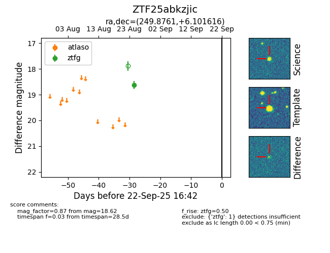

FINK: ZTF25abkzjic
Lasair: ZTF25abkzjic
ALeRCE: ZTF25abkzjic
ZTF25abkzjic (ztf,fink)
equatorial (ra, dec) = (249.8761,+6.10162)
galactic (l, b) = (22.5885,+32.02085)

last ztfg=18.62
1 ztfg detections